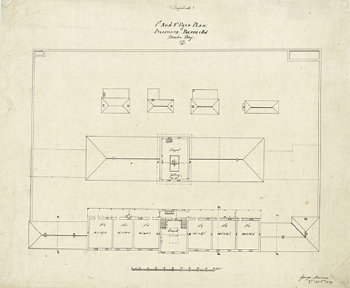
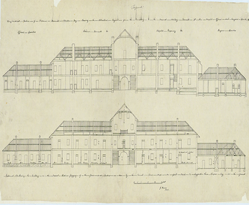
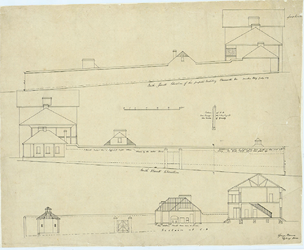
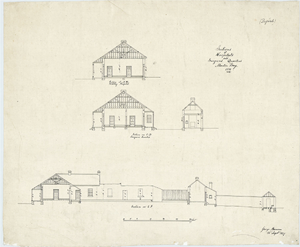
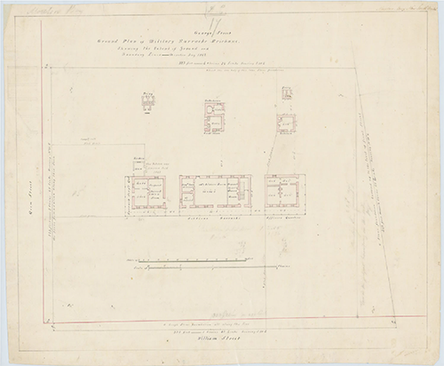
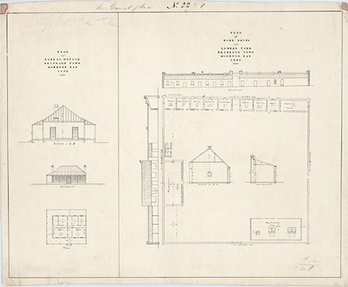

Back to gallery
Moreton Bay Prisoner Settlement Architecture Plans
The images below are digitised copies of the original Moreton Bay architectural prison plans and alphabetical registry of the records.
-

Drawing showing 1st and 2nd pair plan of Prisoners' Barracks, Moreton Bay, 27 September 1839
-

Drawing showing east elevations of Prisoners' Barracks, Moreton Bay, 1 October 1839
-

Drawing showing elevations of proposed Military Barracks, Moreton Bay, July 1839
-

Drawing showing sections of hospitals and Surgeon's quarters, Moreton Bay, 26 September 1838
-

Ground plan of Military Barracks, showing the extent of ground and boundary lines, Brisbane Town, Moreton Bay, c 1842
-

Plan of Public Office, workshops and lumber yard, Brisbane Town, Moreton Bay, 1838